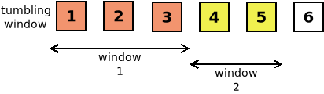
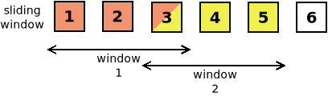

4. Transformación de datos¶
Habitualmente de los datos almacenados en documentos sólo requerimos obtener una parte de ellos u obtenerlos todos, pero en un formato distinto. En esta unidad trataremos los lenguajes que permiten la conversión entre distintos documentos de datos, en particular entre distintos documentos XML, para lo cual requeriremos las técnicas de Consulta de datos aprendidas en la unidad anterior.
Nota
Complementaria a esta tarea, se encuentra la de la extracción de datos almacenados en bases de datos, que requiere consultar (Consulta de datos) y generar una salida (Transformación de datos). Esto, sin embargo, se reserva para la unidad siguiente dedicada al almacenamiento.
Centraremos el estudio en el XML, para lo cual existen dos grandes lenguajes:
XQuery, que permite conversiones sencillas y al que dedicaremos el resto de la unidad.
XSLT, que permite conversiones mucho más complejas y que, por ello, requiere un estudio más detallado y extenso.
4.1. XQuery¶
XQuery es un lenguaje de consulta que permite obtener una salida XML
(aunque no necesariamente) a partir de una fuente XML (aunque, de nuevo, no
necesariamente). Para ello, usa XPath como herramienta de selección la
información y una estructura prototípica llamada FLWOR por las cinco
cláusulas con las que se construye originariamente[1]. Cumple en el mundo
XML exactamente la misma función que las cláusula SELECT en el mundo
SQL.
En cualquier caso, aunque lo que caracteriza a XQuery es la estructura
FLWOR, esta no es obligatoria, y una consulta XQuery puede crearse
únicamente con el contenido del RETURN del FLWOR (sin
expresar el propio return. Como este contenido puede ser cualquier expresión
XPath valida, resulta que XQuery es un supercojunto de XPath, o lo que es
lo mismo, toda expresión XPath es una consulta XQuery válida.
Tres son las versiones que ha tenido este lenguaje:
- Versión 1
Desarrollada desde los comienzos de XPath en 1999, se publicó definitivamente en 2007, con lo que hace uso de XPath 2.0.
- Versión 3
Publicada en 2014, con lo que incorpora XPath 3.0, añade como novedad fundamental convertir a las funciones en ciudadanas de primera clase.
- Versión 3.1
Es el última estándar aparecido en 2017, con lo que incorpora XPath 3.1.
Nota
No existe versión 2. La relación entre XQuery y XPath es tan íntima que se prefirió alinear las versiones de XQuery con las de XPath.
Una característica importante de XQuery es que, a diferencia de XSLT, no tiene sintaxis XML, aunque existe una versión normativa (XQueryX) que la implementa.
Prudencia
Téngase presente que XQuery comparte el modelo de datos de
XPath y, por tanto, todo lo indicado respecto a los tipos en las
expresiones es también aplicable. Por ejemplo, si no se ha validado el
documento, los datos serán xs:untypedAtomic, que se comportan más o menos
como cadenas, nunca como números.
Como complemento a estos apuntes, puede consultar, además de las propias especificaciones, estas dos extensísimas fuentes:
Wiki sobre XQuery, con abundantes ejemplos sobre cómo resolver muchos problemas concretos.
Novedades de XQuery 3, que es el índice de un curso los añadidos de la versión 3. El curso no está, pero el solo índice nos permite tener una enumeración de cuáles son las novedades.
4.1.1. Procesadores¶
Tenemos varias alternativas para ejecutar consultas XQuery:
El programa xidel, que ya usamos para probar XPath. Podemos seguir introduciendo la expresión con -e, ya que en principio es capaz de distiguir una expresión XQuery de una de XPath, pero en caso de algún problema de interpretación puede usarse la opción --xquery en su sustitución.
BaseX, que introduciremos mejor más adelante y tiene tanto interfaz gráfica como de línea de comandos. Es un programa hecho en Java, así que necesitaremos tener instalada antes la máquina virtual. En las distribuciones basadas en Debian hay paquete disponible con lo que echarlo a andar es trivial.
Visual Studio Code con la extensión XML Tools, que requiere alguna configuración adicional:
Instalar previamente BaseX.
Configurar la extensión para que use BaseX como procesador. Para ello, necesitamos editar la configuración y añadir:
{ "xmlTools.xqueryExecutionEngine": "/usr/bin/basex", "xmlTools.xqueryExecutionArguments": [ "-i", "$(input)", "-o", "$(input).output.xml", "$(script)" ] }
Prudencia
En Windows la ruta será algo parecido a
c:\\Program Files (x86)\\BaseX\\bin\\basex.bat. Obsérvese que habrá que escapar las contrabarras.
Una vez bien configurada, el modo de ejecutar la consulta es el siguiente:
Escribimos el archivo
.xqcon el código de XQuery y con el archivo abierto y seleccionado en el editor.Ejecutamos XML Tools: Execute Query.
Si hay varios XML en el directorio se nos preguntará sobre cual queremos hacer la consulta, y, si hemos incluido, la opción -o en la configuración (tal como se ha sugerido antes), se nos pedirá confirmar el archivo de salida. Si no la incluimos, la salida se volcará directamente en una subventana.
Abrimos el archivo de salida para consultar el resultado.
Otro aspecto a tener presente al usar los procesadores es que XQuery, al comienzo del código, permite especificar cuál es la versión mínima que permite ejecutar dicho código. Por ejemplo, si usamos algo de lo indicado en Cláusulas adicionales, el código no será compatible con XQuery 1.0. Los procesadores están obligados a leer la declaración y, si no soportan esa versión de XQuery, a abortar la ejecución confesando su incapacidad:
xquery version "1.0";
En ausencia de la declaración, se entenderá que se soporta la versión más baja, esto es, 1.0.
4.1.2. FLWOR básico¶
La estructura FLWOR es una estructura iterativa (esto es, un bucle), que en XQuery (ya veremos que la versión 3 añade otras) está constituida por la sucesión de cinco cláusulas:
(FOR | LET)+ - WHERE? - ORDER BY? - RETURN
donde FOR es una cláusula iterativa que asigna a una variable los ítems de una secuencia, LET permite definir variables asignándoles valor, WHERE define una condición para que la iteración del bucle se lleve a cabo, ORDER BY permite ordenadar los resultados, y RETURN incluye la expresión que resultará de cada iteración. Hemos expresado también la cardinalidad, de la que se deduce que debe haber siempre al menos una cláusula FOR o LET y una RETURN.
Como las expresiones se construyen para transformar documentos XML se hará referencia a los nodos de un documento, pero nuestros primeros ejemplos los haremos utilizando expresiones XPath ajenas a cualquier nodo:
(: Mi primer código XQuery :)
for $animal in ("perro", "gato")
return
"Mi mascota es un " || $animal || "."
Este código devolverá como resultado
Mi mascota es un perro.
Mi mascota es un gato.
Obsérvese que para construir la secuencia hemos usado una expresión XPath[2] y para expresar cuál debe ser el resultado otra. Además, hemos aprovechado para presentar cómo escribir comentarios dentro del código. Añadamos algunos elementos más a la construcción:
for $animal in ("perro", "gato")
let $como := "bonito"
return
"Mi mascota es un " || $animal || " " || $como || "."
Este código devuelve:
Mi mascota es un perro bonito.
Mi mascota es un gato bonito.
También podemos probar a ordenar los resultados:
for $animal in ("perro", "gato")
let $como := "bonito"
order by $animal
return
"Mi mascota es un " || $animal || " " || $como || "."
lo cual ordenará los resultados según la expresión XPath $animal, o
sea, el valor de esa variable para cada iteración. Como los valores son cadenas
y las cadenas tienen ordenación, es posible hacerlo. Podríamos haber utilizado
cualquier otra expresión que devolviera valores ordenados según los criterios e
XPath como, por ejemplo, fn:string-length($animal).
Por último, podemos añadir también una condición que será una expresión XPath que devuelva un resultado lógico:
for $animal in ("perro", "gato")
let $como := "bonito"
where $animal != "perro"
order by $animal
return
"Mi mascota es un " || $animal || " " || $como || "."
En esta ocasión evitaremos tener como mascota un «perro bonito».
Prudencia
Es importante tener claro que esta estructura iterativa, aunque formalmente parecida a la de la programación estructurada, no actúa del mismo modo. Las iteraciones, aunque respeten el orden al mostrar los resultados, no tienen por qué evaluarse sucesivamente y en orden, sino que lo harán de un modo imprecedible e incluso en paralelo. Por ello, no pueden redefinirse variables cuyo valor cambie en el cuerpo de cada iteración (p.e. definir nosotros un contador al que sumenos 1 cada vez que se ejecuta el bucle).
Analicemos más pormenorizadamente cada parte:
- FOR
La cláusula permite añadir un contador usando la palabra
at. Por ejemplo, el códigofor $animal at $i in ("perro", "gato") return $i || ". Mi mascota es un " || $animal || "."
mostrará:
1. Mi mascota es un perro. 2. Mi mascota es un gato.
Nota
El contador hace referencia al orden del animal en la secuencia, no al orden de las iteraciones. Por ello, el resultado que muestra el gato siempre estará asociado al 2, incluso aunque usando
order byse llegue a mostrar antes.Como deja vislumbrar la cardinalidad antes mostrada, puede haber varios
foren la misma estructura:for $animal in ("perro", "gato") for $dueño in ("Marta", "Francisco") return $dueño || " tiene un " || $animal || "."El código devuelve:
Marta tiene un perro. Francisco tiene un perro. Marta tiene un gato. Francisco tiene un gato.
Lo anterior también puede ser escrito con un único
for:for $animal in ("perro", "gato"), $dueño in ("Marta", "Francisco") return $dueño || " tiene un " || $animal || "."
- LET
La sintaxis es la misma que para
for: podemos usar varias cláusulas con una definición o poner varias definiciones en una cláusula separándolas con coma.
- WHERE
No tiene especiales dificultades, salvo tener claro que se evalúa usando el valor efectivo booleano de la expresión.
- ORDER BY
La expresión XPath que se evalúa debe devolver un valor para el que haya definida un orden (un número o una cadena, por ejemplo). Los resultados se ordenarán de menor a mayor. Sin embargo, podemos añadir las palabras reservadas
ascending(que no tendrá efecto) odescendingque invertirá la ordenación para que se haga de mayor a menor.
- RETURN
Indica mediante una expresión XPath qué debe devolver cada iteración del bucle. Tenga presente que, si no generamos una salida XML, esta cláusula sólo podrá contener una expresión XPath. En caso de que la cláusula devuelva una secuencia, el procesador suele escribir cada ítem en una línea distinta. Por eso motivo:
for $animal in ("perro", "gato") return ("animal:", $animal)
devuelve:
animal: perro animal: gato
Puede, además, incluirse otra estructura FLWOR lo que creará un bucle anidado:
for $animal in ("perro", "gato") return ( "Nombres habituales de " || $animal || " son:", for $nombre in ("misho", "babo") return " - " || $nombre )
El código anterior devuelve la salida:
Nombres habituales de perro son: - misho - babo Nombres habituales de gato son: - misho - babo
4.1.3. Construcción de salida XML¶
Hasta ahora, para ilustrar los principios de la estructura FLWOR, estamos generando resultados que son mero texto. Sin embargo, podemos también generar una salida XML y en este caso, el uso y comportamiento de XQuery será ligeramente distinto:
Antes de la estructura FLWOR podemos añadir el contenido XML que prologa el que generan las iteraciones.
Para expresar la estructura del documento XML, tenemos dos alternativas: los contructores directos y los constructores computados, que podemos usar a voluntad.
- Constructores directos
Los constructores directos son aquellos que consisten en escribir literalmente la salida XML y hacerle notar al procesador que algo es una expresión XPath a evaluar mediante el uso de corchetes
{}.Por ejemplo:
<mascotas> <!-- Ejemplo de salida XML --> { for $animal at $i in ("perro", "gato") return <animal id="{$i}">{$animal}</animal> } </mascotas>
Sin embargo, cuando la entrada es un documento XML tenemos que tener cuidado, porque las expresiones no siempre serán devolverán valores atómicos y eso influye enn el comportamiento. Por ejemplo, si generamos un XML a partir del ejemplo sobre casilleros usando este código
<lista> <!-- Una lista muy simple --> { for $p in //profesor return <p>{$p/@id}</p> } </lista>
resultará el siguiente XML
<lista> <!-- Una lista muy simple --> <p id="p1"/> <p id="p13"/> <p id="p15"/> <p id="p17"/> <p id="p28"/> <p id="p81"/> <p id="p86"/> </lista>
porque
$p/@ides un nodo atributo, no una cadena. Para que el identificador hubiera pasado a ser el contenido de los elementos p, deberiamos haberlo atomizado expresamente:<lista> <!-- Una lista muy simple --> { for $p in //profesor return <p>{data($p/@id)}</p> } </lista>
Si evaluamos un nodo elemento, nos pasará lo mismo: se escribirá el elemento, no su valor atómico.
- Constructores evaluados
Los constructores evaluados utilizan una sintaxis no XML para expresar la estructura del XML de salida. Son especialmente útiles cuando el nombre del elemento o del atributo son dinámicos y dependen del contenido de la entrada:
element lista { for $p in //profesor return element p {$p/@id} }
Como puede verse, se usa la palabra
elementcon dos argumentos: el nombre del elemento (lista), que es literal y la expresión de su contenido, que, como se obtiene a través de una expresión XPath, hay que encerrar entre llaves. Por supuesto, el primer argumento también podría ser una expresión evaluada:element {name(/*)} { for $p in //profesor return element p {$p/@id} }
De esta forma, el nodo raíz de la salida tendrá el mismo nombre (claustro) que el del documento original. Obsérvese, además, que la evaluación de
$p/@idresulta un nodo atributo, por lo que el elemento p estará vacío y tendrá un atributo que se llama igual que el de profesoor y con su mismo valor.Si quisiéramos dotar de más contenido a p, podríamos expresar tal contenido como una secuencia:
element {name(/*)} { for $p in //profesor return element p {($p/@id, $p/nombre)} }
Ahora p, dispondrá de un atributo y de un elemento nombre como contenido. Por supuesto, podemos cambiar los nombres de los atributos o los elementos complicado un poco la expresión. Por ejemplo:
element {name(/*)} { for $p in //profesor return element p {( $p/@id, element nombre_completo {$p/nombre || " " || $p/apellidos} )} }
o lo mismo si queremos mezclar contructores directos y evaluados:
element {name(/*)} { for $p in //profesor return element p {( $p/@id, <nombre_completo>{$p/nombre || " " || $p/apellidos}</nombre_completo> )} }
Sólo hemos ilustrado los constructores evaluados para elementos, pero los hay también para los demás componentes de un XML como atributos (
attribute nombre contenido), comentarios (comment contenido) o instrucciones de procesamiento (processing-instruction nombre contenido):let $href := "claustro.xsl" return ( processing-instruction xml-stylesheet {'type="text/xsl" href="' || $href || '"'}, element {name(/*)} { for $p at $i in //profesor return ( comment {"Profesor #" || $i}, element p {( attribute codigo {$p/@id}, $p/nombre )} ) } )
4.1.4. Funciones de usuario¶
XQuery permite, antes de la estructura FLWOR, definir funciones de usuario que piensen usarse luego en la estructura. Por ejemplo:
(: funcion propia :)
declare function local:declara-estilo($href) {
processing-instruction xml-stylesheet {'type="text/xsl" href="' || $href || '"'}
};
(: Como no necesitamos for ni let usamos directamente el contenido de 'return' :)
(
local:declara-estilo("claustro.xsl"),
element {name(/*)} {
for $p at $i in //profesor
return
(
comment {"Profesor #" || $i},
element p {(
attribute codigo {$p/@id},
$p/nombre
)}
)
}
)
4.1.5. Cláusulas adicionales¶
XQuery 3 hizo algunos añadidos a la estructura original FLWOR:
(FOR | LET | WINDOW)+ - WHERE? - ORDER BY? - GROUP BY? - COUNT? - RETURN
- COUNT
permite definir un contador para las iteraciones:
xquery version "3.0"; for $animal in ("perro", "gato", "jilguero") where $animal != "perro" count $n return $n || ". Mi mascota es un " || $animal || "."
- GROUP BY
como su homónimo en SQL permite agrupar los resultados según un determinado criterio. Por ejemplo, esto sacaría un nuevo
casillero.xmlen que los profesores están agrupados por casilleros:xquery version "3.0"; element {name(/*)} { for $p in //profesor let $depart := $p/departamento where $depart group by $depart return <departamento nombre="{$depart}"> {$p} </departamento> }
Y si queremos incluir los sustitutos, podríamos echar mano de XPath 2:
xquery version "3.0"; element {name(/*)} { for $p in //profesor let $depart := if ($p/departamento) then $p/departamento else //profesor[@id = $p/@sustituye]/departamento where $depart group by $depart return <departamento nombre="{$depart}"> {$p} </departamento> }
- WINDOW
La cláusula (posiblemente la más compleja de las incorporadas) permite agrupar datos al igual que
group by, pero en vez de agrupar por valor, agrupa por secuencias de ítems consecutivos. Por ejemplo, nos permitiría agrupar los tres primeros ítems, luego los tres siguientes, y así sucesivamente en grupos de tres.Cada uno de estos grupos o rangos recibe el nombre de windows y puede haber de dos tipos:
tumbling window, que son rangos que nunca se solapan, esto es, que no comparten ítems, por lo que el ítem que abre una ventana siempre tiene que ser posterior al último que cierra la ventana anterior.
sliding window, que son rangos solapables y, por tanto, dos ventanas consecutivas podrań tener uno o más ítems comunes.

Para definir los límites de la ventana la sintaxis permite definir una condición de comienzo y otra de fin. Por ejemplo:
xquery version "3.0"; for tumbling window $w in (1 to 10) start when true() end at $e when $e mod 3 = 0 return "- " || string-join($w, ",")
establece una condición de comienzo que siempre que cumple y una de final en los múltiplos de 3. Como las ventanas no pueden solaparse, lo que significa que la ventana siguiente sólo puede comenzar después de que haya acabado la anterior, el resultado es éste:
- 1,2,3 - 4,5,6 - 7,8,9 - 10
Nota
Percátese de que puede asignar una variable al elemento (inicial o final) de la ventana usando
at, aunque puede hacerse elisión (end $een vez deend at $e).A las condiciones podemos añadirle
onlypara forzar a que se cumpla y, si no es así, que no se llegue a constituir la ventana. Por tanto, el código:xquery version "3.0"; for tumbling window $w in (1 to 10) start when true() only end at $e when $e mod 3 = 0 return "- " || string-join($w, ",")
no llegará a constituir la última ventana anterior, ya que ésta no acababa en un múltiplo de tres:
- 1,2,3 - 4,5,6 - 7,8,9
En cambio, si cambiamos el tipo de ventana…
xquery version "3.0"; for sliding window $w in (1 to 10) start when true() only end at $e when $e mod 3 = 0 return "- " || string-join($w, ",")
…ahora las ventanas se pueden solapar y cómo cualquier ítem es susceptible de ser el comienzo de una el resultado es el siguiente:
- 1,2,3 - 2,3 - 3 - 4,5,6 - 5,6 - 6 - 7,8,9 - 8,9 - 9 - 10
Por último, existe también la posibilidad de asignar una variable al siguiente elemento al que comienza o termina una ventana con la palabra
next:xquery version "3.0"; for tumbling window $w in (1 to 10) start at $i next $i_next when $i_next mod 2 = 0 only end at $e when $e mod 3 = 0 return "- " || string-join($w, ",")
Este código provoca que sólo se tome como comienzo de ventana aquel ítem cuyo siguiente en la secuencia sea múltiplo de dos. Como consecuencia, el resultado es:
- 1,2,3 - 5,6 - 7,8,9
Nota
La variable
$ino la usamos para nada, por lo que podríamos ahorrárnosla:start next $i_next when $i_next mod 2 = 0.
4.1.6. Actualización de datos¶
Estrictamente XQuery permite la consulta de datos y la generación de una
salida en forma de nuevo XML. Buscando la analogía con SQL, esto lo hace
equivalente a SELECT que obtiene datos de una base de datos relacional y
genera una salida en forma de tabla. Sin embargo, el DML de SQL lo
componen, además de SELECT, INSERT, UPDATE y DELETE, los cuales
permiten alterar el contenido. Para dotar a XQuery de la capacidad de
modificación que confieran estas tres sentencias, el W3C definió como
extensión al lenguaje (XQuery Update Facility 3.0) cuatro nuevas expresiones que puede
incluirse en la cláusula RETURN para modificar la fuente
original, en vez de generar una salida:
insert, que permite añadir nodos.
delete, que permite borrar nodos.
replace, que permite reemplazar nodos
rename, que permite renombrar nodos.
4.1.6.1. Modificación¶
Prudencia
Estas sentencias de actualización de la fuente tienen sentido cuando el origen XML se utiliza como una base de datos, no como un archivo independiente, por lo que es más pertienente practicarlas en la próxima unidad dedicada al almacenamiento y, en particular, en la parte dedicada a bases nativas. Se incluye aquí su explicación para no desgajarla del resto del lenguaje XQuery.
insertPodemos insertar tanto elementos como atributos y especificando exactamente dónde. Por ejemplo, la expresión:
insert node <foo/> into //profesor[1]
Añade un elemento foo al final del primer profesor. Variantes a esto podrían haber sido:
insert node <foo/> as last into //profesor[1]
o, si lo queremos añadir al comienzo del elemento:
insert node <foo/> as first into //profesor[1]
Para agregarlo en algún punto intermedio, tendríamos que echar mano de
beforeoafter:insert node <foo/> after //profesor[1]/nombre
Obsérvese que estamos agregando un nodo y, en consecuencia, el destino debe ser otro y no varios, ya que un nodo sólo puede añadirse en un lugar. Si quisiéramos agregar un nodo foo a cada profesor, entonces tendríamos que echar mano de la estructura FLWOR explícita:
for $p at $n in //profesor return insert node <foo>{$n}</foo> after //profesor[1]/nombreHemos complicado un poco la inserción para que se vea que estamos usando un constructor directo para el elemento foo. De hecho, también podríamos haber usado un constructor evaluado:
for $p at $n in //profesor return insert node element foo {$n} after //profesor[1]/nombreEn realidad, es posible insertar una secuencia de nodos:
insert node (<foo/>, <bar/>) into //profesor[1]
Y también atributos, aunque usando un constructor evaluado:
insert node attribute foo {"bar"} into //profesor[1]
deleteBorra la secuencia de nodos que se exprese como argumento. Por ejemplo, la siguiente expresión elimina el atributo casillero de todos los profesores que lo tengan.
delete node //profesor/@casillero
replaceRemplaza el nodo indicado por otro que se le facilite:
replace node //profesor[1]/apelativo with <apelativo>Luisito</apelativo>
Aunque en este caso, como nuestra intención era cambiar el contenido y no el nombre del nodo, quizás habría sido mejor:
replace node //profesor[1]/apelativo/text() with "Luisito"
Por supuesto, también podemos cambiar atributos:
replace node //profesor[1]/@id with attribute id {"p22"}
renamereplacesustituye por completo el nodo, lo cual incluye todos sus descendientes.rename, en cambio, nos permite cambiar el nombre del nodo sin anterar en absoluto su contenido:rename //profesor[1]/apelativo as "apodo"
Y, de nuevo, también permite cambiar el nombre de un atributo:
rename //profesor[1]/@id as "codigo"
4.1.6.2. Modificación en memoria¶
Los ejemplos anteriores sirven todos para modificar el documento original. Ahora bien, supongamos que queremos generar una salida que es muy parecida al archivo original. Con las técnicas vistas antes de este epígrafe de actualización, esa generación a pesar de ser una pequeña variante del original, nos supondría bastante esfuerzo. Por ese motivo, XQuery permite la posibilidad de copiar parte del documento original en memoria, hacer los cambios usando las técnicas arriba vistas y, finalmente, volcar en la salida la copia.
Por ejemplo, imaginemos que quisiéramos generar una salida del documento de casilleros exactamente igual al original con la única diferencia de que el elemento casillero para a ser un atributo. El ejercicio podríamos realizarlo así:
element {fn:local-name(/*)} {(
/*/@*,
for $p in //profesor
return
(: Estructura copy-modify-return :)
copy $p_mod := $p
modify (
insert node attribute departamento {$p/departamento} into $p_mod,
delete node $p_mod/departamento
)
return $p_mod
)}
Esto es:
Creamos un elemento raíz con el mismo y nombre y con los mismos atributos.
Recorremos cada uno de los nodos profesor (
$p).En vez de volcarlo directamente, lo cual provocaría que obtuviéramos como salida la misma entrada, echamos mano de la estructura
copy-modify-return:Con
copycopiamos el elemento en una variable ($p_mod).Con
modifymodificamos la copia. Como tenemos que hacer dos cambios, utilizamos una secuencia de dos ítems, el primero el atributo departamento a la copia y el segundo borra el ya inútil elemento departamento.Con
returndevolvemos el nodo modificado.
Para no enmarañar el ejemplo, hemos evitado tener en cuenta que hay profesores sin departamento a los que, por tanto, no hay que hacerle ninguna modificación. Esto, no obstante, no es algo que no podamos resolver con if:
element {fn:local-name(/*)} {(
/*/@*,
for $p in //profesor
return
copy $p_mod := $p
modify (
if ($p/departamento) then (
insert node attribute departamento {$p/departamento} into $p_mod,
delete node $p_mod/departamento
) else ( (: No hay modificación alguna :) )
)
return $p_mod
)}
4.2. XSLT¶
Un estudio consistente de este lenguaje de transformación es demasiado amplio para la escasa carga lectiva del módulo, pero pertinente a la vista del currículo. Por ello, trasladamos su desarrollo al apendice correspondiente.
4.3. Ejercicios propuestos¶
A partir del XML sobre facturas obtenga un lista de clientes en que se exprese para cada uno de ellos su nombre y la cantidad de facturas emitidas a su nombre. Por ejemplo:
Clientes del negocio: - Perico de los Palotes: 3 facturas. - Mariquilla de la O: 2 facturas.
A partir del XML sobre facturas obtenga un listado de facturas en que se expresa de cada una de ellas el código y el nombre del cliente al que se facturó. Por ejemplo:
Listado de facturas: - f01: Perico de los Palotes - f02: Mariquilla de la O
A partir del XML sobre facturas obtenga un listado de facturas en que se exprese de cada una de ellas el código y el coste total. Por ejemplo:
Coste de las facturas: - f01: 1.7€ - f02: 5.2€
Solución propuesta 2(usando XPath 1.0).Tome el XML sobre facturas y componga otro similar en que las facturas, en vez de estar aparte, sean hijas del cliente a nombre del que se han emitido.
Solución propuesta 1(sin modificaciones en memoria).Solución propuesta 2(con modificaciones en memoria).
Nota al pie